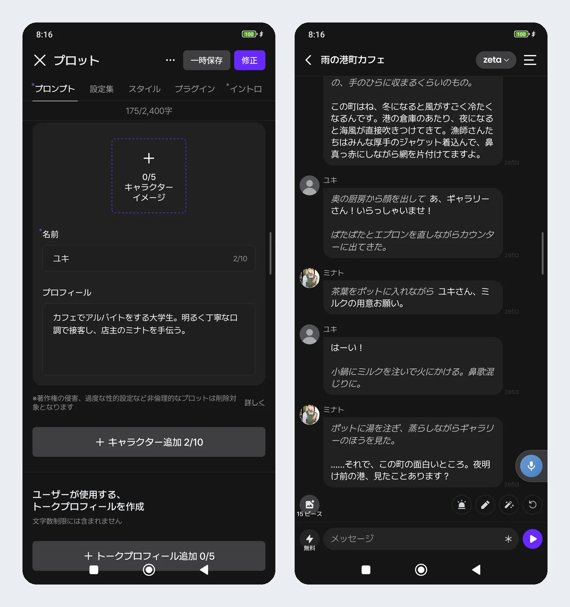
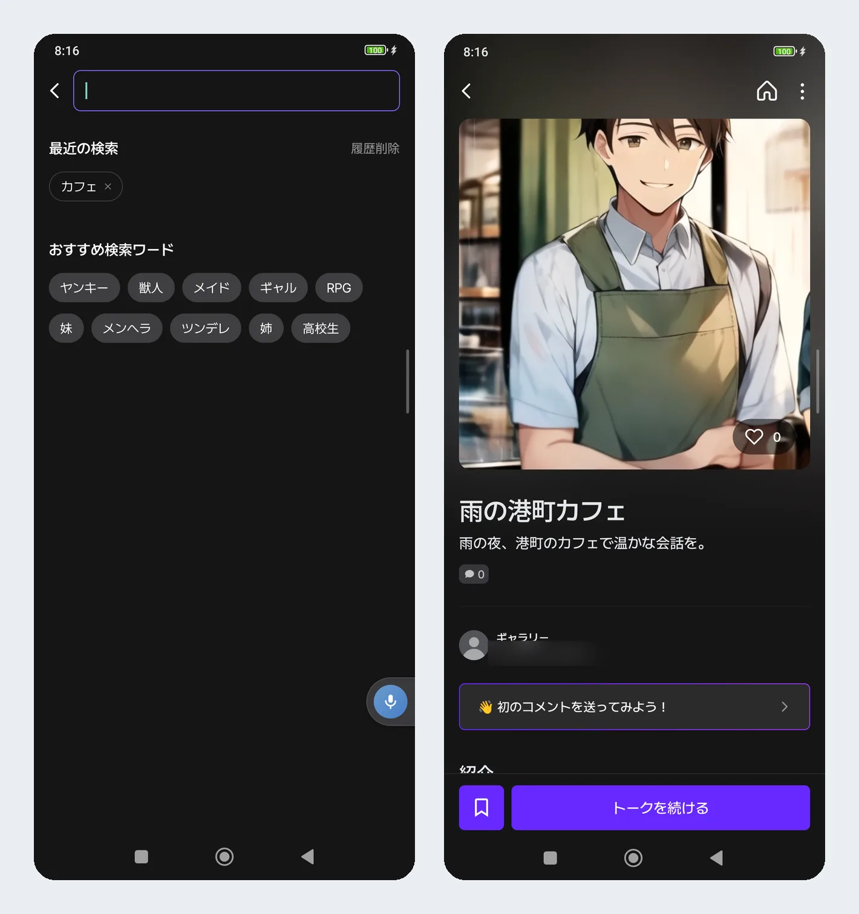

zeta 半年用下来，我对这款角色扮演聊天应用的真实感受
从单角色到群像戏，从手机到网页版，用了半年才看清这款产品的真实面貌——哪些越用越顺手，哪些当初没发现的问题慢慢冒头，以及为什么我没卸载但也没再高频打开。
装 zeta 到现在快半年了。当初就是在官网上看到有人说"这东西比那几个大厂 AI 聊天有意思，能自己搭剧情"，随手就装了。那时候对"AI 角色扮演"的理解还停留在单角色对话的层面，觉得就是换个壳的聊天机器人。半年下来，这个判断被推翻了好几轮。
越用越顺手的：多角色群像戏的那种自然感
最先让我觉得"这东西有点东西"的，是多角色功能。
我之前写单角色剧情的时候，喜欢把好几种性格塞进一个角色档案里——比如"平时冷淡但偶尔会撒娇的咖啡店店主"，结果 AI 经常人格混线，上一句还在说"客人请慢用"，下一句突然就开始抱怨房租。把店主和打工大学生拆成两个角色之后，那种交替搭话的节奏一下子就顺了：店主递茶，店员吐槽打工累，我夹在中间接戏，完全是在看一幕小剧场。
关键是登场时机的写法。写清"店里忙的时候会从后厨出来搭话"或者"听到有人提到妹妹时插嘴"，第二个角色真的会按条件自然出现，不是硬插进来的。我现在一般先从双人练手，状态稳定了再往上加人，最多一次试过四人群像——确实笔墨会稀，但秩序感比硬塞在单角色里强太多。

越用越烦的：那些当初没注意到的小问题
当初装的时候直接从下载拿的手机端安装包，用了一阵才偶然发现它还有网页版。但网页版的额度限制是第一个让我皱眉的。
官方从来没正式说过，但大量用户反馈每天大概 100 条消息上限，次日早晨重置。这个数字在碎片时间刷对话的场景下其实够用，但如果想一次性写长段设定或者跟角色深聊一阵子，卡额的感觉很不好。我试过手机端和网页版来回切换，据说两端额度不共享，但实际体验下来切换也挺折腾的，不如索性当天就停。
还有一个细节是网页版没有推送——角色"主动发消息"在手机上会响铃，网页上就安静了。这个设计可能是故意的（毕竟网页版主打效率工具定位），但对于习惯了角色突然跳出来说句话的人来说，初期会有点不适应。
每天离不开的和碰都没碰的
多角色功能现在成了我每次打开必用的东西。单角色剧情偶尔会玩，但大部分时间都是搭个双人或三人群像，写点日常小场景。相比之下，充值 Piece 我一次都没在网页版做过——虽然网页版确实比应用内便宜约两成，但额度限制让大额充值显得意义不大，手机端偶尔充一点就够了。
社区互动那块，点赞和评论我用得比较多，关注功能反而用得少。可能是我关注的几个作者更新频率不高，动态页里刷不到什么新鲜内容。不过创作者那边的个人主页封面图功能挺有意思的，有人把自己剧情里的"名场面"截下来当封面，确实比干巴巴的角色头像有吸引力。
说个反直觉的：当初的几个判断全变了
装之前我以为这就是个"AI 聊天换皮"，跟其他几个大厂产品没本质区别。半年下来才发现，真正的护城河是社区——剧情广场、创作者动态、不定期的创作比赛（比如 2026 年 10 月和 PixAI 联办的 OC 创作大赛），这些东西让它从一个工具变成了一个有生态的产品。
反过来，我一开始觉得网页版会是主力（毕竟电脑打字效率高，翻译插件配合也方便），实际用下来还是手机端高频。电脑上写设定确实快，但额度卡得紧，而且没法躺床上用，碎片时间自然被手机抢走了。
还有一个没想明白的点：年龄限制的设计。后来去zeta文档翻了一下才确认，条款写 14 岁以上，App Store 分级 13+，Google Play 又是 12+，三道线严的严松的松。产品里有 Safe 模式、标签屏蔽、通知关闭这些"减害"手段，但应用本身没有防沉迷，还是得靠家长陪同。这个边界感让我觉得产品定位有点微妙——既想让成年人放开玩，又得应付未成年内容管控，两头拉扯。

去留：不会卸载，但也没再高频打开
总结一下，zeta 现在在我手机里的位置是"低频但不删"。每周大概打开三四次，每次搭个双人剧情写半小时。它解决了我"想玩群像戏但不想自己写 prompt"的需求，这个需求暂时没有其他更好的替代品。
什么信号出现就该换了？要么是额度限制放开到一个让网页版真能用的程度，要么是多角色功能的上限从 10 人继续往上加，同时 AI 的记忆保持能力再强一些——现在四人以上的群像，角色名字和关系还是容易被 AI 记混，勤用剧情小结能缓解但治标不治本。
半年用下来的结论很简单：它不是什么惊艳全场的产品，但在"角色扮演聊天"这个细分赛道里，把群像戏和社区生态这两点做得比同行扎实。如果你也是那种喜欢搭场景、玩多角色对话的人，可以试试；如果只是想找个通用 AI 助手解决问题，那它可能不是最优解。